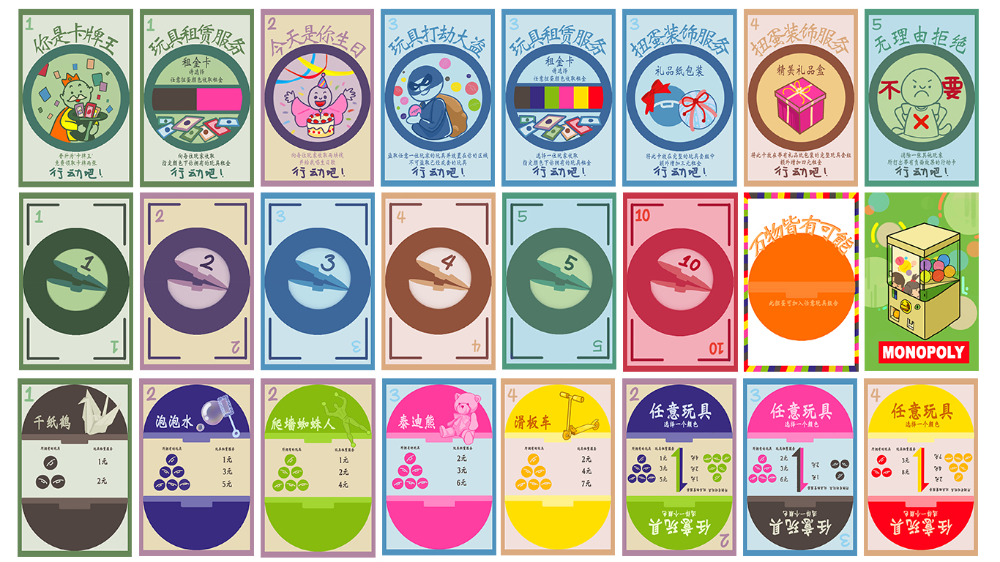

Childhood Monopoly
2024 | Digital | Prints | Card Games

Inspired by 'Totto-Chan: The Little Girl at the Window', this project explores Gen Z's collective childhood memories through the lens of play. By repurposing the mechanics of 'Monopoly Deal', I've transformed the card game into a medium for preserving and celebrating the nostalgic toys of our youth.
